SAE-Benachrichtigung · Berechtigungsverwaltung
SCR-PRJ-011 · SCR-RBAC-001·002·003·004·006 · Benachrichtigungsempfänger · Rollen · Berechtigungen · Zuweisung · Historie
SAE-Benachrichtigung
- 1.1Bildschirmaufbau
- 1.2Empfänger hinzufügen und speichern
1.1Bildschirmaufbau
Überblick
Diese Seite legt fest, an wen eine E-Mail gesendet wird, und zeigt, was dabei herausgekommen ist. Die E-Mail wird nicht von einer Person verschickt. Das System sendet sie automatisch, sobald das Feld „SAE ja/nein“ eines Ereignisses von „Nein“ auf „Ja“ wechselt. Welches Feld das „SAE ja/nein“ ist, legt die Seite AE-Festlegung fest. Diese Seite ist nur für die Empfänger zuständig.
Bildschirmbeschreibung
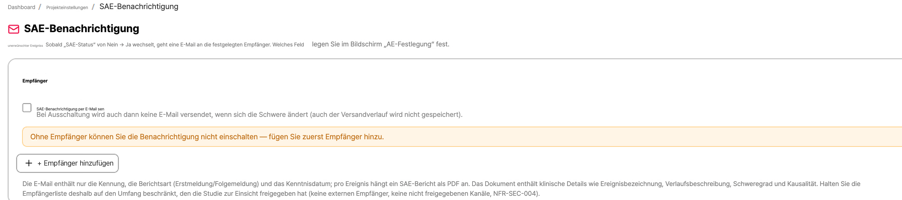
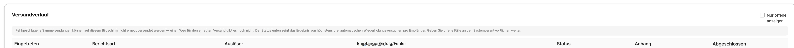
„SAE-Benachrichtigung per E-Mail senden“ — Schaltet die Benachrichtigung ein und aus. Ohne mindestens einen Empfänger lässt sich die Funktion nicht einschalten (siehe Hinweise unten).
„Nur offene anzeigen“ — Filtert nur die Fälle heraus, deren Versand noch nicht abgeschlossen ist.
Der Untertitel des Bildschirms nennt die Auslösebedingung: „Sobald das Feld ‚SAE ja/nein‘ eines Ereignisses von ‚Nein‘ auf ‚Ja‘ wechselt, wird eine E-Mail an die festgelegten Empfänger gesendet.“
Bedeutung des ausgeschalteten Zustands — „Ist die Funktion ausgeschaltet, wird bei einem Wechsel der Schwere keine E-Mail gesendet (und es entsteht auch kein Versandverlauf).“ Dass nicht einmal ein Verlauf festgehalten wird, ist wichtig.
Gelber Hinweis — Zeigt, dass die Funktion im Moment nicht eingeschaltet werden kann, weil noch kein Empfänger eingetragen ist. Sobald Sie Empfänger eintragen, ändert sich der Text an derselben Stelle 1.2.
Was die E-Mail enthält — Dieser Absatz erklärt es: Im Text stehen nur Kennung, Meldungsart und Datum der Kenntnisnahme. Im angehängten SAE-Bericht sind die klinischen Details dagegen unverändert enthalten (siehe Hinweis zu 1.2).
Versandverlauf — Jeder automatische Versand wird hier einzeln festgehalten. In der Aufnahme wurde noch nichts versendet, deshalb steht dort „Keine Benachrichtigung versendet.“
Grauer Hinweis — „Fehlgeschlagene Benachrichtigungen können auf dieser Seite nicht erneut gesendet werden. Dafür gibt es noch keinen Weg — der erneute Versand ist noch nicht vorhanden. Der Status unten ist das Ergebnis von höchstens drei automatischen Wiederholungen je Empfänger. Offene Fälle geben Sie bitte an die Systemverantwortlichen weiter.“
Aufbau des Versandverlaufs
| Spalte | Inhalt |
|---|---|
| Ereignis · Meldungsart | Zeitpunkt der Benachrichtigung · Erstmeldung oder Folgemeldung |
| Auslöser | Wechsel der Schwere (Nein → Ja) oder Inhaltsänderung |
| Empfänger/Erfolg/Fehler | Anzahl der Empfänger sowie Zahl der erfolgreichen und fehlgeschlagenen Versände |
| Status | Alle versendet · Teilweise fehlgeschlagen · Alle fehlgeschlagen · Kein Empfänger |
| Anhang · Abschluss | SAE-Berichtsdatei · Zeitpunkt des Abschlusses |
Zu beachten
Unbedingt prüfen Datenschäden · Formular nicht abschließbar
- • Empfänger müssen zuerst eingetragen werden, bevor sich die Benachrichtigung einschalten lässt. Wird „SAE-Benachrichtigung per E-Mail senden“ bei leerer Empfängerliste angehakt und gespeichert, wird das abgelehnt, denn eine Benachrichtigung ohne Empfänger hat keinen Sinn. Die Reihenfolge ist also nicht Empfänger hinzufügen → speichern → Haken setzen → speichern. Sie tragen die Empfänger ein, setzen den Haken und speichern dann einmal 1.2. Außerdem entsteht während die Funktion ausgeschaltet ist kein Verlauf. Deshalb ist es sicherer, sie vor Betriebsbeginn einzuschalten.
1.2Empfänger hinzufügen und speichern
Überblick
Tragen Sie die Empfänger zeilenweise ein, jeweils eine Person pro Zeile. Eine Zeile besteht aus zwei Feldern, E-Mail und Anzeigename. Nach der Eingabe wird erst mit „Speichern“ übernommen. Sobald mindestens ein Empfänger eingetragen ist, lautet der Kartentitel „Empfänger (N)“, und der gelbe Hinweis oben wird durch einen anderen Text ersetzt.
Bildschirmbeschreibung

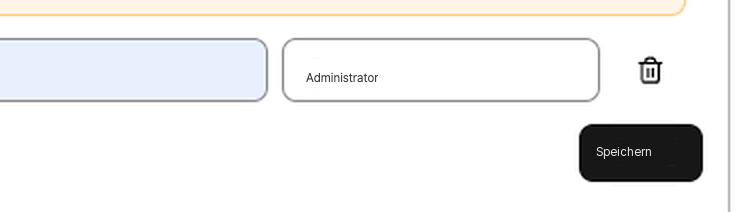
E-Mail — Die Adresse des Empfängers. Adressen, die sich nur in Groß- und Kleinschreibung unterscheiden, gelten als dieselbe Adresse und werden deshalb als Duplikat abgelehnt.
„+ Empfänger hinzufügen“ — Legt eine weitere leere Zeile an. Für mehrere Empfänger wiederholen Sie diesen Schritt.
Anzeigename — Ein Namensschild, damit man erkennt, wer hinter der Adresse steckt (in der Aufnahme: „Administrator“).
Löschen (Papierkorb) — Entfernt diese Zeile. Beim Löschen des letzten Empfängers werden Sie noch einmal um Bestätigung gebeten.
„Speichern“ — Speichert das Ein- und Ausschalten der Benachrichtigung und die Empfängerliste gemeinsam. Ohne Klick wird nichts übernommen.
Der Kartentitel lautet jetzt „Empfänger (1)“. Hier sehen Sie, wie viele Empfänger eingetragen sind.
Der gelbe Hinweis wurde durch einen anderen Text ersetzt: „Diese Liste wird nicht automatisch aktualisiert. Auch wenn Verantwortliche wechseln oder ausscheiden, bleiben die Adressen bestehen. Bei Rollenwechseln pflegen Sie die Liste bitte selbst.“
Zu beachten
Unbedingt prüfen Datenschäden · Formular nicht abschließbar
- • Diese Liste verwaltet das System nicht. Sie müssen sie selbst pflegen. Wechseln Verantwortliche oder scheiden sie aus, bleiben die Adressen stehen, und die Benachrichtigungen gehen weiter an sie. Der SAE-Bericht, der der Benachrichtigung angehängt wird, enthält jedoch klinische Details wie Ereignisbezeichnung, Verlaufsbeschreibung, Schweregrad und Kausalität. Diese Liste bestimmt daher zugleich, wer diese Daten einsehen kann. Der Absatz unten auf dieser Seite erklärt das. Halten Sie den Empfängerkreis deshalb nur in dem Umfang, den das Projekt für die Einsicht freigegeben hat, und prüfen Sie ihn bei jeder Übergabe erneut. Bei externen Adressen oder gemeinsamen Postfächern ist besondere Vorsicht geboten.
Rollenliste und Verwaltung
- 2.1Bildschirmaufbau
- 2.2Zeilenaktionsmenü
- 2.3Neue benutzerdefinierte Rolle
- 2.4Rollensatz importieren
2.1Bildschirmaufbau
Überblick
Auf dieser Seite sehen Sie, welche Rollen im Projekt verwendet werden, und wie vielen Personen jede Rolle zugewiesen ist. Es gibt zwei Arten von Rollen: die fünf Standardrollen, die das System vorgibt, und die benutzerdefinierten Rollen, die Sie im Projekt selbst anlegen. Standardrollen lassen sich weder löschen noch deaktivieren, Sie können nur ihre Berechtigungen anpassen.
Bildschirmbeschreibung
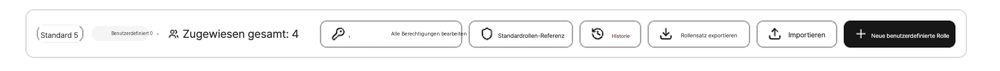
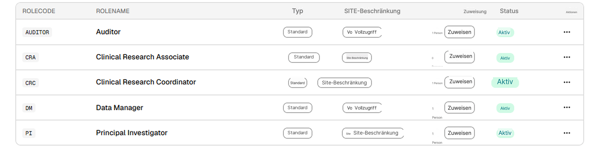
„Alle Berechtigungen bearbeiten“ — Zeigt die fünf Rollen mit allen Berechtigungen in einer Tabelle 4.1. Ohne Bearbeitungsrecht lautet die Beschriftung „Alle Berechtigungen anzeigen“.
„Standardrollen-Referenz“ — Eine Nur-Lese-Ansicht, die erklärt, welche Aufgaben die fünf Standardrollen ursprünglich haben 4.2.
„Historie“ — Zeigt, wann und wie sich Rollen und Zuweisungen geändert haben 4.3.
„Rollensatz exportieren“ — Speichert die aktuelle Konfiguration aus Rollen und Berechtigungen als Datei. Sie dient als Momentaufnahme für Prüfungen.
„Importieren“ — Wendet eine exportierte Datei auf ein anderes Projekt an 2.4.
„+ Neue benutzerdefinierte Rolle“ — Legt eine Rolle an, die nur in diesem Projekt gilt 2.3.
„Zuweisen“ — Weist diese Rolle einer Person zu. Die Seite zur Zuweisung öffnet sich, das Zuweisungsfenster ist automatisch geöffnet und die Rolle schon ausgewählt 3.2.
⋯ — Öffnet das Aktionsmenü dieser Rolle 2.2.
Zusammenfassung — Anzahl der Standardrollen · Anzahl der benutzerdefinierten Rollen · Gesamtzahl der Zuweisungen an Personen.
Die Tabelle hat 7 Spalten — ROLECODE · ROLENAME · Typ · SITE-Beschränkung · Zuweisung · Status · Aktion.
Typ — Standard (vom System bereitgestellt) oder benutzerdefiniert (selbst angelegt).
SITE-Beschränkung — Site-Beschränkung bedeutet Zugriff nur auf die Daten der eigenen Einrichtung. Vollzugriff bedeutet Zugriff auf das gesamte Projekt.
Status — Bei einer deaktivierten Rolle ändert sich hier die Anzeige. Sie kann dann nicht für neue Zuweisungen verwendet werden.
Zu beachten
Leicht missverständliches Verhalten
- • Rollen ändern darf nur der Workspace-Administrator. Der Bildschirm ist auch für Hauptprüfer und Datenmanager sichtbar, dort fehlen aber „Importieren“ und „+ Neue benutzerdefinierte Rolle“ ganz, und „Alle Berechtigungen bearbeiten“ heißt nur noch „Alle Berechtigungen anzeigen“. Dass etwas nicht zu sehen ist, ist kein Fehler, sondern das normale Verhalten je nach Berechtigung. Außerdem sind Schaltflächen in beendeten oder archivierten Projekten sichtbar, aber ausgegraut. Diese Unterscheidung zeigt, dass sie wieder nutzbar werden, sobald sich der Status ändert.
2.2Zeilenaktionsmenü
Überblick
Für jede Rollenzeile gibt es drei Möglichkeiten. Die ersten beiden führen zu einer anderen Seite, nur die letzte verändert tatsächlich etwas. Das Menü gilt nur für die Zeile, in der Sie es öffnen. Prüfen Sie daher zuerst, bei welcher Rolle Sie das ⋯ gedrückt haben.
Bildschirmbeschreibung
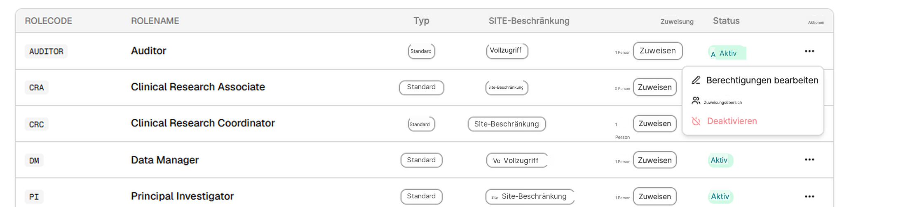

⋯ — Öffnet das Menü dieser Zeile. Erneutes Klicken oder ein Klick außerhalb schließt es.
„Berechtigungen bearbeiten“ — Öffnet die Bearbeitung der Berechtigungen nur dieser einen Rolle. Um mehrere Rollen gleichzeitig zu sehen, verwenden Sie oben „Alle Berechtigungen bearbeiten“ 4.1.
„Zuweisungsübersicht“ — Öffnet die Ansicht, die zeigt, wem diese Rolle zugewiesen ist 3.1.
„Deaktivieren“ — Nimmt die Rolle außer Gebrauch, damit sie nicht mehr verwendet wird. In der Aufnahme ist der Punkt ausgegraut (siehe Hinweise unten).
Prüfen Sie links, zu welcher Rolle die geöffnete Zeile gehört. In der Aufnahme ist es die Zeile Auditor.
Zu beachten
Unbedingt prüfen Datenschäden · Formular nicht abschließbar
- • Standardrollen lassen sich nicht deaktivieren. Dass „Deaktivieren“ in der Aufnahme ausgegraut ist, ist kein Fehler. Auditor ist eine der fünf Standardrollen. Fährt man mit der Maus über die Schaltfläche, erscheint „Standardrollen können nicht deaktiviert werden“. Der Punkt ist nur bei benutzerdefinierten Rollen aktiv, die noch aktiv sind. In beendeten oder archivierten Projekten ist er ebenfalls deaktiviert. Wenn eine Standardrolle nicht genutzt werden soll, deaktivieren Sie sie nicht, sondern weisen Sie sie niemandem zu.
2.3Neue benutzerdefinierte Rolle
Überblick
Wenn die fünf Standardrollen nicht reichen, legen Sie hier eine Rolle an, die nur in diesem Projekt gilt. Das ist zum Beispiel nötig, wenn Sie eine Kombination brauchen, die es bei den Standardrollen nicht gibt, etwa einen Beobachter mit reinem Lesezugriff. Hier legen Sie nur das Grundgerüst der Rolle an. Welche Berechtigungen sie erhält, bestimmen Sie danach auf der Seite zur Bearbeitung der Berechtigungen 4.1.
Bildschirmbeschreibung
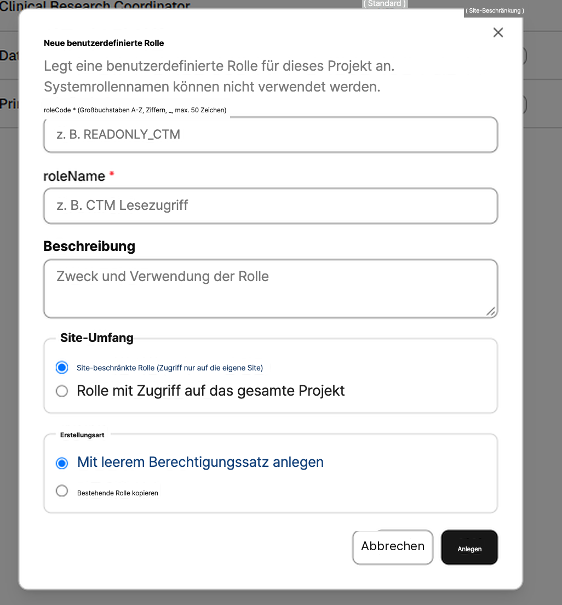
roleCode — Der Code, an dem die Rolle erkannt wird. Erlaubt sind nur englische Großbuchstaben, Ziffern und Unterstriche (_), höchstens 50 Zeichen (Beispiel: READONLY_CTM).
roleName — Der Name, der auf dem Bildschirm angezeigt wird (Beispiel: CTM-Lesezugriff).
Beschreibung — Halten Sie fest, warum Sie diese Rolle angelegt haben. Das Feld ist für spätere Bearbeiter gedacht.
Site-Bereich — Eine Rolle mit Site-Beschränkung sieht nur die Daten der eigenen Einrichtung. Eine Rolle mit Vollzugriff auf das Projekt sieht alle Einrichtungen. Nach dem Anlegen bestimmt dieser Punkt den Charakter der Rolle. Wählen Sie ihn daher sorgfältig.
Erstellungsart — Bei „Mit leerem Berechtigungssatz anlegen“ startet die Rolle ohne jede Berechtigung. Bei „Bestehende Rolle kopieren“ übernehmen Sie die Berechtigungen der gewählten Rolle als Ausgangspunkt.
„Anlegen“ — Legt die Rolle an. In der Liste erscheint sie als Zeile mit dem Typ „benutzerdefiniert“.
Der Fenstertext nennt die Einschränkung: „Es wird eine benutzerdefinierte Rolle auf Projektebene angelegt. Systemrollennamen können nicht verwendet werden.“
Die Eingaberegel steht neben dem Feldnamen: „(englische Großbuchstaben, Ziffern, _ · 50 Zeichen)“.
Zu beachten
Unbedingt prüfen Datenschäden · Formular nicht abschließbar
- • Der Name einer Standardrolle kann nicht verwendet werden. Geben Sie im Feld roleCode einen Namen ein, den das System selbst verwendet, etwa PI, CRC, CRA, DM oder AUDITOR, oder einen Code, der schon vorhanden ist, wird die Eingabe abgelehnt. In beiden Fällen steht der Grund direkt am Feld roleCode. Wenn Sie außerdem „Mit leerem Berechtigungssatz anlegen“ wählen, kann die Rolle direkt nach dem Anlegen nichts. Weisen Sie solche Personen einer Rolle ohne Berechtigungen zu, können sie keinen Bildschirm öffnen. Halten Sie deshalb die Reihenfolge ein: anlegen → Berechtigungen bearbeiten → zuweisen.
2.4Rollensatz importieren
Überblick
Hier übernehmen Sie in dieses Projekt eine Datei, die Sie in einem anderen Projekt über „Rollensatz exportieren“ gespeichert haben. Das lohnt sich, wenn Sie dieselbe Konfiguration in mehreren Studien verwenden. Beim Anwenden ändern sich die Berechtigungen sofort. Deshalb gibt es eine Vorschau, die Sie vor dem Anwenden durchlaufen. So sehen Sie, was sich ändert, bevor Sie es übernehmen.
Bildschirmbeschreibung
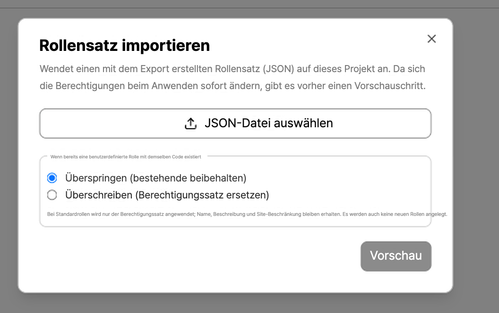
„JSON-Datei auswählen“ — Wählen Sie die Datei, die beim Exportieren entstanden ist. Vor der Auswahl kommen Sie nicht zum nächsten Schritt.
Wenn schon eine benutzerdefinierte Rolle mit demselben Code existiert — „Überspringen“ lässt die bestehende Rolle unverändert. „Überschreiben“ ersetzt den Berechtigungssatz durch den der Datei.
„Vorschau“ — Zeigt zuerst, was sich ändert. Vor der Dateiauswahl ist die Schaltfläche ausgegraut und lässt sich nicht anklicken.
Der Fenstertext beschreibt den Ablauf: „Beim Anwenden ändern sich die Berechtigungen sofort, deshalb gibt es vorher eine Vorschau.“
Hinweis: Bei Standardrollen gilt eine Ausnahme — „Bei Standardrollen wird nur der Berechtigungssatz angewendet. Name, Beschreibung und Site-Beschränkung bleiben erhalten. Es werden auch keine neuen Standardrollen angelegt.“
Zu beachten
Unbedingt prüfen Datenschäden · Formular nicht abschließbar
- • Wenden Sie die Änderung nach der Vorschau direkt an. Ändert eine andere Person die Zielrolle zwischen Vorschau und Anwenden, wird das Anwenden für alle Einträge abgelehnt. Dann erscheint: „Die Zielrolle wurde nach der Vorschau geändert. Es wurde nichts angewendet. Bitte starten Sie die Vorschau erneut.“ Ein Teil wird nie übernommen, es bleibt also kein Zwischenzustand. Starten Sie in diesem Fall die Vorschau einfach neu. Außerdem lässt sich „Überschreiben“ kaum rückgängig machen. Exportieren Sie deshalb vor dem Anwenden mit „Rollensatz exportieren“ die aktuelle Konfiguration, damit Sie sie notfalls wieder herstellen können.
Rollenzuweisung
- 3.1Zuweisungsliste
- 3.2Neue Rollenzuweisung
3.1Zuweisungsliste
Überblick
Hier verwalten Sie, wer mit welcher Rolle an diesem Projekt beteiligt ist. Die Rollenliste legt fest, welche Rollen es gibt. Diese Seite regelt dagegen die Verbindung zwischen Person und Rolle. Für eine Person können Sie außerdem die zuständige Einrichtung und den Gültigkeitszeitraum festlegen. Läuft der Zeitraum ab, verliert die Zuweisung automatisch ihre Wirkung.
Bildschirmbeschreibung
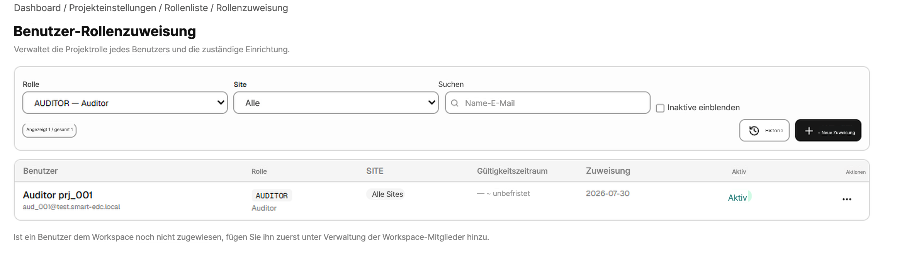
Rollenfilter — Zeigt nur die Zuweisungen einer bestimmten Rolle. Wenn Sie über „Zuweisen“ in der Rollenliste hierherkommen, ist diese Rolle schon ausgewählt. Daneben können Sie den Filter Site und die Suche (Name · E-Mail) nutzen.
„Inaktive einblenden“ — Zeigt auch die Zuweisungen, die aufgehoben wurden. Normalerweise ist die Option aus. Schalten Sie sie nur ein, wenn Sie frühere Zuweisungen prüfen wollen.
„Historie“ — Zeigt, wann sich Zuweisungen geändert haben 4.3.
„+ Neue Zuweisung“ — Öffnet das Zuweisungsfenster 3.2.
⋯ — Aktionsmenü dieser Zuweisung.
Untertitel des Bildschirms: „Verwaltet die Projektrollen und die zuständigen Einrichtungen je Benutzer.“
Angezeigt N / gesamt N — Anzahl der durch den Filter angezeigten Einträge und Gesamtzahl.
Die Tabelle hat 7 Spalten — Benutzer · Rolle · SITE · Gültigkeitszeitraum · Zuweisung · Aktiv · Aktion. In der Spalte Benutzer stehen Name und E-Mail gemeinsam.
Gültigkeitszeitraum — Ist kein Zeitraum festgelegt, steht dort „— ~ unbefristet“. Die Aufnahme zeigt diesen Zustand.
Hinweis unten — Erscheint, wenn die Person, die Sie zuweisen wollen, nicht in der Liste steht. Ohne Workspace-Mitgliedschaft ist keine Zuweisung möglich. Fügen Sie die Person zuerst in der Verwaltung der Workspace-Mitglieder hinzu (siehe Hinweise unten).
Zu beachten
Leicht missverständliches Verhalten
- • Personen, die nicht Workspace-Mitglied sind, können nicht zugewiesen werden. Im Zuweisungsfenster erscheinen in der Benutzerliste nur Workspace-Mitglieder. Personen, die noch nicht Mitglied sind, tauchen dort gar nicht auf. Folgen Sie dem Link im Hinweis unten, fügen Sie die Person zuerst in der Verwaltung der Workspace-Mitglieder hinzu und kehren Sie dann zurück, um sie zuzuweisen. Wenn Sie eine gesuchte Person in der Liste „Benutzer wählen“ nicht finden, liegt das meistens nicht an einem falschen Namen, sondern daran, dass die Person kein Mitglied ist.
3.2Neue Rollenzuweisung
Überblick
In diesem Fenster geben Sie einer Person eine Rolle. Mit Benutzer und Rolle ist die Zuweisung schon vollständig. Zuständige Einrichtung und Gültigkeitszeitraum legen Sie nur bei Bedarf fest. Sind Sie über „Zuweisen“ in der Rollenliste hierhergekommen, ist die Rolle schon ausgefüllt, und Sie müssen nur noch die Person wählen. Die Aufnahme zeigt genau diesen Zustand.
Bildschirmbeschreibung

Benutzer (Workspace-Mitglied) — Wählen Sie die Person aus. Es werden nur Workspace-Mitglieder angezeigt (siehe Hinweis bei 3.1).
Rolle — Wählen Sie, mit welcher Rolle die Person beteiligt wird. In der Aufnahme ist AUDITOR vorausgewählt.
Site — Die zuständige Einrichtung. Ohne Auswahl sieht die Rolle das gesamte Projekt (siehe Hinweise unten).
Startdatum — Bleibt das Feld leer, gilt die Zuweisung sofort.
Enddatum — Bleibt das Feld leer, gilt die Zuweisung unbefristet. Ist ein Datum eingetragen, verliert die Zuweisung ab diesem Tag automatisch ihre Wirkung, ohne dass Sie sie manuell aufheben müssen.
Begründung — Wenn Sie hier etwas eintragen, wird es zusammen mit der Änderung in der Historie festgehalten 4.3. Das Feld ist optional, für die Nachvollziehbarkeit bei Prüfungen aber empfehlenswert.
„Zuweisen“ — Bestätigt die Zuweisung. Die Liste bekommt eine neue Zeile.
Fenstertext: „Weist einem Workspace-Mitglied eine Projektrolle zu.“
Hinweis, was passiert, wenn Sie eine Einrichtung festlegen: Die Person wird zusätzlich als Prüfer dieser Einrichtung registriert und erhält damit Aufgaben und Benachrichtigungen dieser Einrichtung.
Zu beachten
Unbedingt prüfen Datenschäden · Formular nicht abschließbar
- • „Site“ ist nicht nur eine Eingrenzung des Zugriffs. Lassen Sie das Feld leer, sieht die Rolle die Daten aller Einrichtungen des Projekts. Wählen Sie dagegen eine Einrichtung, wird die Person außerdem als Prüfer dieser Einrichtung registriert und erhält deren Aufgaben und Benachrichtigungen. Das zeigt das Fenster auch direkt an. Wenn Sie also nur den Zugriff eingrenzen wollen und versehentlich eine Einrichtung wählen, übernehmen Sie damit auch deren Aufgaben. Bei Monitoren, die mehrere Einrichtungen betreuen, lassen Sie das Feld leer. Wählen Sie eine Einrichtung nur, wenn die Person die Aufgaben dieser Einrichtung tatsächlich übernimmt, etwa eine Studienpflegekraft, die zur Einrichtung gehört.
Berechtigungsprüfung und Historie
- 4.1Rollen-Berechtigungsmatrix
- 4.2Vorlage der Standardrollen
- 4.3Änderungshistorie der Rollen
4.1Rollen-Berechtigungsmatrix
Überblick
In einer Tabelle sehen und ändern Sie, welche Rolle was darf. Die Berechtigungen stehen in den Zeilen, die Rollen in den Spalten. Ein Häkchen im Schnittpunkt zeigt die Berechtigung dieser Rolle. Es gibt viele Berechtigungen, daher sind sie in nach Bereichen gruppierte Abschnitte geordnet, die sich ein- und ausklappen lassen. Mit der Suche oben finden Sie schneller, was Sie suchen. Änderungen werden erst mit „Speichern“ übernommen.
Bildschirmbeschreibung
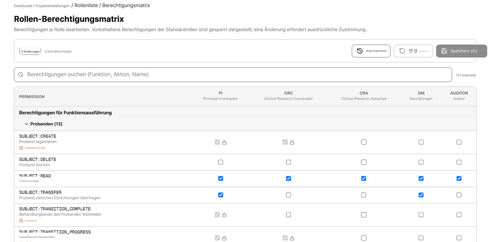
Suche — Filtert nach Berechtigungsname, Funktion und Aktion. Das ist der schnellste Weg, wenn Sie nicht wissen, in welcher Gruppe eine Berechtigung steht.
„Änderungshistorie“ — Zeigt, wann und wie sich Berechtigungen geändert haben 4.3.
„Speichern (N)“ — Übernimmt Ihre Änderungen. Die Zahl in Klammern ist die Anzahl der geänderten Felder. Bei 0 ist die Schaltfläche nicht anklickbar. Um die Änderungen rückgängig zu machen, klicken Sie links auf „Änderungen verwerfen“.
Der Untertitel nennt die Regel vorab: „Vorbehaltene Berechtigungen von Standardrollen sind gesperrt markiert, und eine Änderung erfordert ausdrückliche Zustimmung.“
N Änderungen · N betroffene Rollen — Hier sehen Sie vor dem Speichern, wie viele Rollen betroffen sind.
N angezeigt — Anzahl der gerade sichtbaren Berechtigungen. Mit einer Suche wird diese Zahl kleiner.
Die Spalten sind die Rollen — in der Aufnahme die fünf Standardrollen (PI · CRC · CRA · DM · AUDITOR). Wenn Sie benutzerdefinierte Rollen anlegen, kommen Spalten hinzu.
Bereichsgruppen — etwa „Probanden (13)“. Sie sind zusammengefasst und lassen sich ein- und ausklappen.
Schloss + „Vorbehalten“ — Eine Kern-Berechtigung dieser Rolle, die sich nicht entfernen lässt (siehe Hinweise unten).
Kontrollkästchen — Klicken Sie, um sie ein- oder auszuschalten. Geänderte Felder sind farbig markiert und werden in der Änderungszahl oben mitgezählt.
Zu beachten
Unbedingt prüfen Datenschäden · Formular nicht abschließbar
- • Gesperrte Felder haben drei verschiedene Gründe. ① Kern-Berechtigung einer Standardrolle: Berechtigungen, die eine Rolle überhaupt erst zu dieser Rolle machen, lassen sich nicht entfernen. So lässt sich dem Hauptprüfer etwa das Recht zur Abmeldung von Probanden (Withdrawal) nicht entziehen. Solche Felder sind deshalb nicht abschaltbar (in der Aufnahme „Vorbehalten (PI,CRC)“). ② Berechtigung auf Plattformebene: Sie kann niemals an Projektrollen vergeben werden. ③ Berechtigung nur für Systemadministratoren. Bei selbst angelegten benutzerdefinierten Rollen ist der Fall ① nicht gesperrt, sodass Sie die Berechtigung einschalten können. Beim Speichern erscheint dann das Fenster „Bestätigung der Änderung vorbehaltener Berechtigungen“, und Sie müssen noch einmal zustimmen. Diese Berechtigungen haben regulatorisch besondere Verantwortung. Verwenden Sie sie deshalb nur, wenn klar ist, wem und warum Sie sie geben.
4.2Vorlage der Standardrollen
Überblick
Dies ist eine Nur-Lese-Ansicht, die zeigt, was die fünf Standardrollen ursprünglich sind. In Karten sind die Hauptaufgaben jeder Rolle und die regulatorische Grundlage dieser Aufgaben zusammengefasst. Bevor Sie Berechtigungen anpassen, prüfen Sie hier, warum eine Rolle diese Berechtigung hat. Da es sich um eine Originalvorlage handelt, die unabhängig von den projektbezogenen Rollen ist, wird hier nichts verändert.
Bildschirmbeschreibung
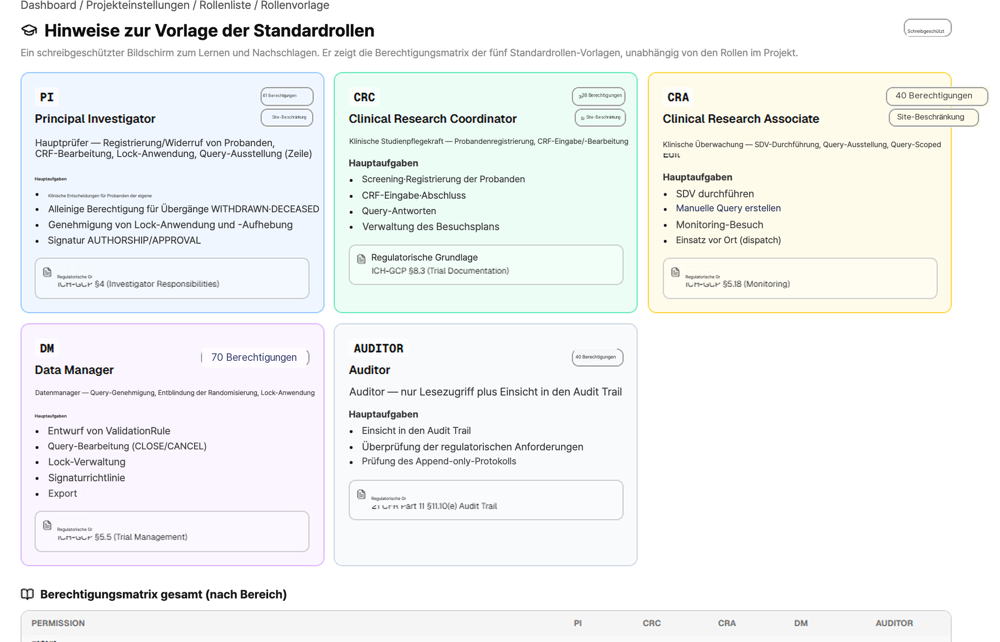
Badge „Schreibgeschützt“ — Auf dieser Seite lässt sich nichts ändern.
Untertitel: „Lese- und Referenzansicht. Zeigt die Berechtigungsmatrix der fünf Standardrollenvorlagen unabhängig von den projektbezogenen Rollen.“
Die zwei Badges rechts auf jeder Karte zeigen Anzahl der Berechtigungen und Site-Beschränkung ja/nein. So vergleichen Sie auf einen Blick, wie viele Berechtigungen die einzelnen Rollen haben.
Hauptaufgaben — Eine kurz zusammengefasste Liste der Aufgaben dieser Rolle.
Regulatorische Grundlage — Zeigt, aus welcher Vorschrift die Aufgabe stammt (Beispiel: ICH-GCP §4 Investigator Responsibilities). Hier finden Sie die Grundlage, wenn Sie Berechtigungen einschränken oder erweitern.
Gesamte Berechtigungsmatrix (nach Bereichen) — Unter den Karten folgt eine Tabelle mit allen Berechtigungen für die fünf Rollen.
Die Spalten sind ebenfalls die fünf Standardrollen. Vorhandene Berechtigungen sind mit einem grünen Häkchen markiert. Anders als in der Bearbeitungsmatrix 4.1 sind die Felder nur Anzeige, keine Kontrollkästchen.
Zu beachten
Leicht missverständliches Verhalten
- • Dieser Inhalt und die tatsächlichen Berechtigungen des Projekts können voneinander abweichen. Diese Seite zeigt die vom System vorgegebene Originalvorlage. Wenn Sie im Projekt Berechtigungen angepasst haben, finden Sie die aktuellen Werte in der Rollen-Berechtigungsmatrix 4.1. Um zu prüfen, was gerade tatsächlich gilt, sehen Sie in 4.1 nach. Um zu prüfen, wie die Rolle ursprünglich gedacht war, sehen Sie auf dieser Seite nach. Wenn eine Frage zu Berechtigungen kommt, öffnen Sie beide Seiten und vergleichen Sie Original und aktuellen Stand. So erkennen Sie, was sich wann geändert hat. Den Zeitpunkt der Änderung finden Sie in der Historie 4.3.
4.3Änderungshistorie der Rollen
Überblick
Hier sehen Sie, wann, bei wem und von was auf was sich Rollen und Zuweisungen geändert haben. Die Einträge können nur hinzugefügt werden, einmal gespeicherte Zeilen lassen sich weder bearbeiten noch löschen. Fehlerhafte Einträge korrigieren Sie, indem Sie eine neue Zeile hinzufügen, die den Fehler richtigstellt. Die Seite zeigt standardmäßig die Zuweisungshistorie von Personen. Änderungen an den Rollen selbst stehen unten gesondert.
Bildschirmbeschreibung
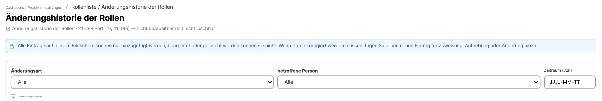
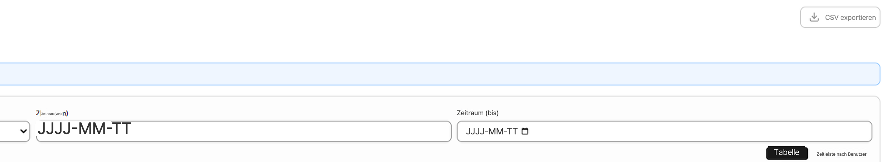
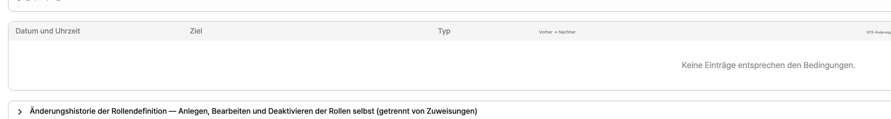
Änderungsart · betroffene Person — Filtern Sie nach Art der Änderung oder nach der betroffenen Person.
„CSV exportieren“ — Speichert die Einträge, die gerade auf dem Bildschirm sichtbar sind, als Datei.
Zeitraum (von) — Ab diesem Datum.
Zeitraum (bis) — Bis zu diesem Datum.
„Tabelle“ / „Zeitleiste nach Benutzer“ — Wählen Sie, ob Sie die Einträge als Tabelle oder nach Person gruppiert in zeitlicher Reihenfolge sehen wollen. Um zu sehen, wie sich die Rolle einer Person im Lauf der Zeit verändert hat, ist die Zeitleiste praktisch.
Der Untertitel beschreibt den Charakter der Seite: 21 CFR Part 11 § 11.10(e) · Änderung und Löschung ausgeschlossen.
Blauer Hinweis: „Alle Einträge auf dieser Seite können nur hinzugefügt werden. Sie lassen sich nicht ändern oder löschen. Muss ein Eintrag korrigiert werden, fügen Sie eine neue Zuweisung, Aufhebung oder Änderung hinzu, die ihn berichtigt.“
Aktuell angezeigt: N Einträge — Anzahl der Einträge, die dem Filter entsprechen.
Die Tabelle hat 7 Spalten — Zeitpunkt · Ziel · Typ · vorher → nachher · SITE-Änderung · Begründung · Ausführende Person. In der Spalte Begründung steht die Begründung, die bei der Zuweisung eingetragen wurde 3.2.
„Änderungshistorie der Rollendefinition“ — Wenn Sie den eingeklappten Bereich öffnen, finden Sie dort das Anlegen, Ändern und Deaktivieren der Rollen selbst. Er ist von der Zuweisungshistorie getrennt. Wann sich Berechtigungen geändert haben, finden Sie deshalb in diesem Bereich.
Zu beachten
Unbedingt prüfen Datenschäden · Formular nicht abschließbar
- • Diese Seite können nur Auditoren und Workspace-Administratoren öffnen. Die Schaltfläche „Historie“ in der Rollenliste ist aber für alle sichtbar. Drücken Hauptprüfer oder Datenmanager sie, werden sie zwar weitergeleitet, landen aber bei einem Hinweis zu fehlenden Rechten. Dass eine Schaltfläche sichtbar ist, heißt nicht, dass man Einsicht hat. Wenn Sie den Verlauf brauchen, bitten Sie einen Auditor oder den Workspace-Administrator darum. Der Verlauf lässt sich per „CSV exportieren“ weitergeben. Dabei gilt der Umfang der aktuell sichtbaren Einträge. Stellen Sie deshalb den Zeitraumfilter vor dem Export richtig ein.